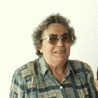

Beatriz Cuatrochio
Born: 24 May 1918, Azul - Buenos Aires - Argentina
Married 17 Dec 1955, Azul - Pcia. de Buenos Aires, to Eduardo Wagner Hipedinger
Died: 13 Aug 2012, Azul - Buenos Aires - Argentina
Occupation: Ama de Casa - Pensionada

Foto tomada el 21/02/1997.-
|
|